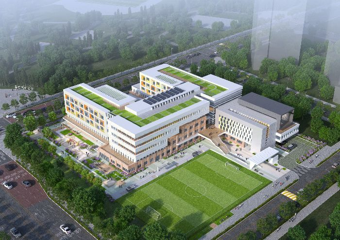

Awal Mula
SMA 1 Sumilir didirikan pada tahun 1990 dengan tujuan untuk menyediakan pendidikan berkualitas bagi siswa di daerah Sumilir dan sekitarnya. Sekolah ini berkomitmen untuk menciptakan lingkungan belajar yang mendukung perkembangan akademik dan karakter siswa.
Perkembangan Sekolah
Seiring berjalannya waktu, SMA 1 Sumilir mengalami berbagai perkembangan, baik dari segi fasilitas maupun kurikulum. Pada tahun 2005, sekolah ini melakukan renovasi besar-besaran untuk meningkatkan kualitas gedung dan ruang kelas, serta menambah fasilitas olahraga dan laboratorium.
Prestasi
Selama lebih dari tiga dekade, SMA 1 Sumilir telah melahirkan banyak alumni yang berprestasi di berbagai bidang. Sekolah ini dikenal sebagai salah satu sekolah unggulan di daerahnya, dengan banyak siswa yang berhasil melanjutkan pendidikan ke perguruan tinggi terkemuka di dalam dan luar negeri.
Visi dan Misi
Visi SMA 1 Sumilir adalah menjadi lembaga pendidikan yang unggul dalam mencetak generasi yang berkarakter, berprestasi, dan siap menghadapi tantangan global. Misi kami adalah menyediakan pendidikan yang berkualitas, membangun karakter siswa, dan menciptakan lingkungan belajar yang inovatif dan inklusif.
Komunitas Sekolah
SMA 1 Sumilir tidak hanya fokus pada akademik, tetapi juga aktif dalam kegiatan ekstrakurikuler yang melibatkan siswa, orang tua, dan masyarakat. Kami percaya bahwa pendidikan yang holistik akan membentuk individu yang seimbang dan siap berkontribusi positif bagi masyarakat.
Timeline Sejarah
1990
SMA 1 Sumilir didirikan dengan tujuan memberikan pendidikan berkualitas.

2005
Renovasi besar-besaran dilakukan untuk meningkatkan fasilitas sekolah.
2020
SMA 1 Sumilir meraih penghargaan sebagai sekolah unggulan di tingkat nasional.